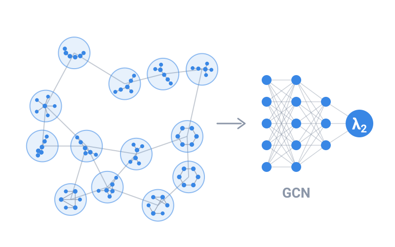

Graph machine learning
Predicting the Spectral Gap with Graph Neural Networks
Can a cheap learned model stand in for an eigenvalue calculation? This project trains a graph convolutional network to predict the algebraic connectivity λ₂ of the graph Laplacian from features that cost almost nothing to compute.

6,000graphs
3random-graph models
11structural features
≈ 95%held-out accuracy
The question
The spectral gap λ₂ controls how fast diffusion and synchronisation happen on a network, but computing it means an eigen-decomposition for every graph. Across large ensembles that cost adds up. Is there a fast surrogate?
Approach
- Generated 2,000 networks per ensemble — Barabási–Albert, Erdős–Rényi and Watts–Strogatz.
- Described each graph by 11 inexpensive structural features.
- Linked similar graphs in a k-nearest-neighbour “graph of graphs” and trained a graph convolutional network — two GCN layers and one dense layer — to predict λ₂.
What I found
The model reached about 95% accuracy on held-out graphs: a fast surrogate for eigen-decomposition across large network ensembles.
Outputs
- In preparation
Prediction of Laplacian Spectral Gap in Barabási–Albert, Erdős–Rényi and Watts–Strogatz Networks with Graph Neural Networks